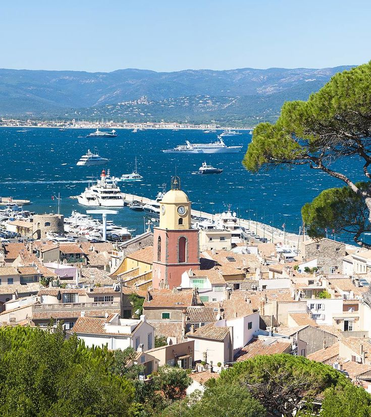

St. Tropez
Nestled along the French Riveria and a short drive from Nice or Cannes, St. Tropez is one of the liveliest towns along the coast during the summer. Vacationers delight in the sandy beaches, culture, gourmet food and hot nightlife of St. Tropez.
In St. Tropez, at the heart of the French Riviera, the sun really does shine brighter and the Mediterranean is truly bluer. Or maybe that's just the effect of the chilled rosé going to your head when you visit St. Tropez. If long leisurely lunches and days spent poolside interrupted only by shopping for Provencal handicrafts are what led you to St. Tropez travel, the historic charms of this seaside town will be a bonus.
The Loire Valley
If it's French splendour, style and gastronomy you seek, the Loire Valley will exceed your expectations, no matter how great. Poised on the crucial frontier between northern and southern France, and just a short train or autoroute ride from Paris, the region was once of immense strategic importance.
Kings, queens, dukes and nobles came here to establish feudal castles and, later on, sumptuous pleasure palaces – that's why this fertile river valley is sprinkled with hundreds of France's most opulent aristocratic estates. With crenellated towers, soaring cupolas and glittering banquet halls, the region's châteaux, and the villages and vineyards that surround them, attest to over a thousand years of rich architectural and artistic creativity.
Paris
 Nowhere else on earth makes the heart swoon like the mention of Paris. The city lures with its magnificent art, architecture, culture, and cuisine, but there’s also a quieter magic waiting to be explored: the quaint cobbled lanes, the sweet patisseries around the corner, and the cozy little bistros that beckon with a glass of Beaujolais. Get ready to make Paris your own.
Nowhere else on earth makes the heart swoon like the mention of Paris. The city lures with its magnificent art, architecture, culture, and cuisine, but there’s also a quieter magic waiting to be explored: the quaint cobbled lanes, the sweet patisseries around the corner, and the cozy little bistros that beckon with a glass of Beaujolais. Get ready to make Paris your own.
For centuries Paris has been one of the world’s most important and attractive cities. It is appreciated for the opportunities it offers for business and commerce, for study, for culture, and for entertainment; its gastronomy, haute couture, painting, literature, and intellectual community especially enjoy an enviable reputation. Its sobriquet “the City of Light” (“la Ville Lumière”), earned during the Enlightenment, remains appropriate, for Paris has retained its importance as a centre for education and intellectual pursuits.
About The Agent
 Rama Yakkala presides in Concord, North Carolina and has several years of travel experience. She has worked with a wide range of people and goes above and beyond in her customer service as well as her patience and persistence to make sure all is well with her clients and their vacations.
Rama Yakkala presides in Concord, North Carolina and has several years of travel experience. She has worked with a wide range of people and goes above and beyond in her customer service as well as her patience and persistence to make sure all is well with her clients and their vacations.